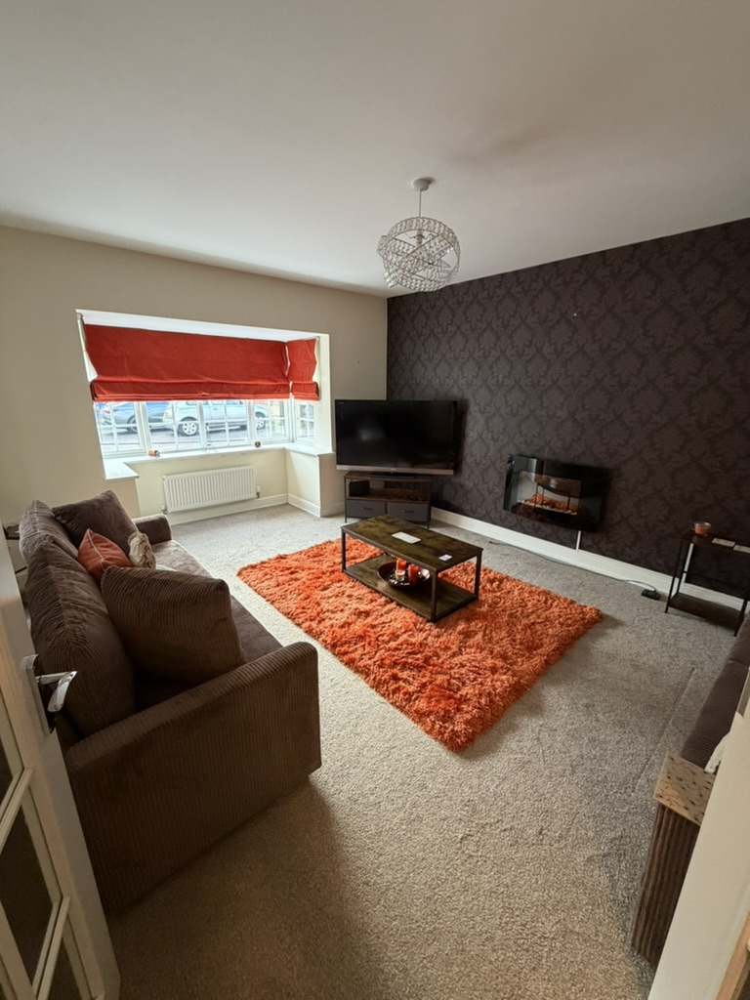
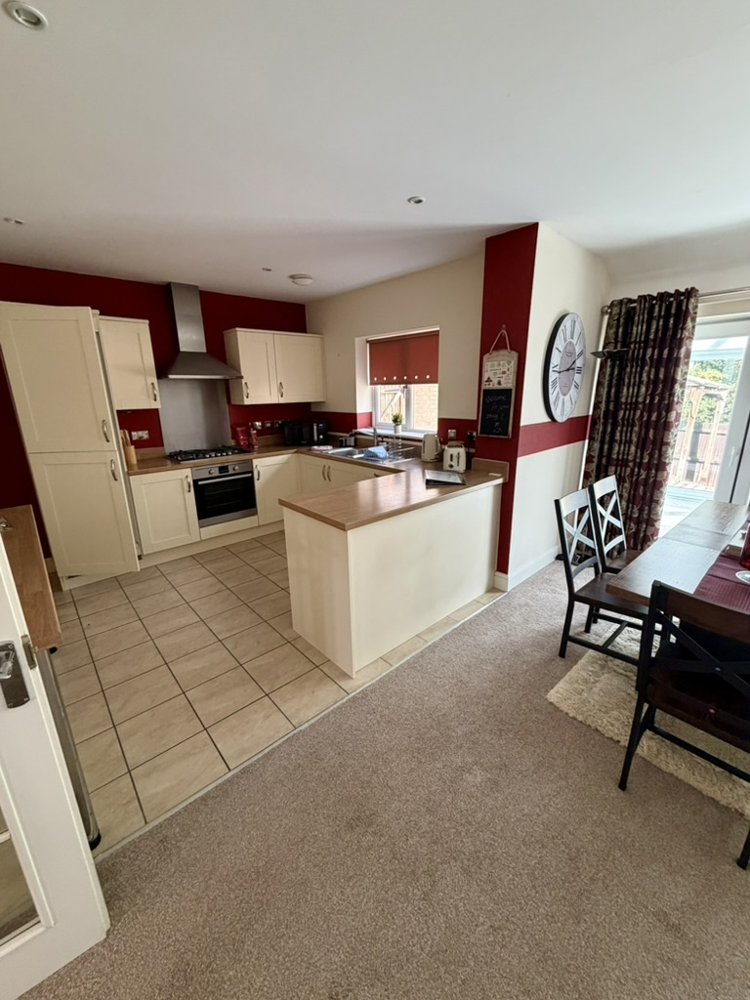
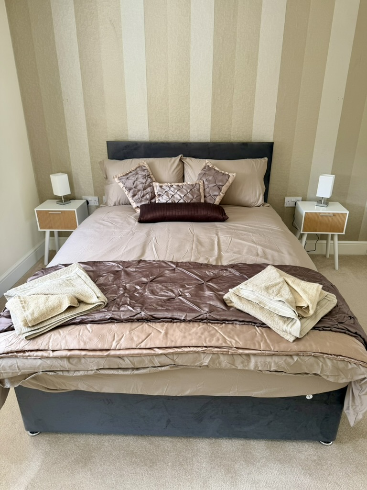
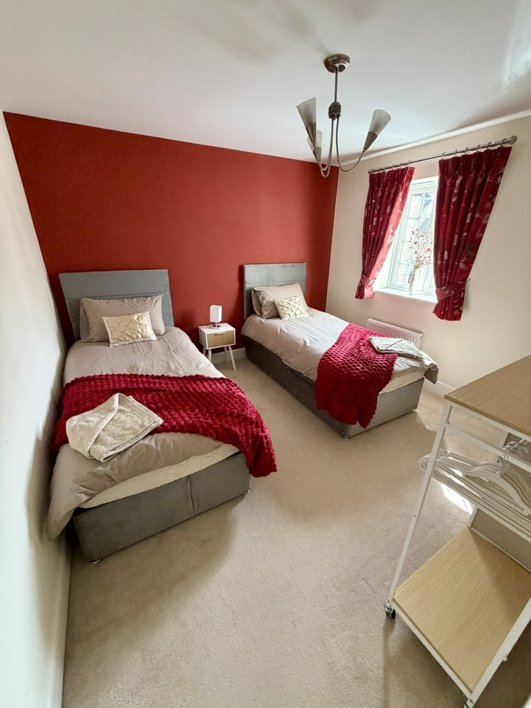
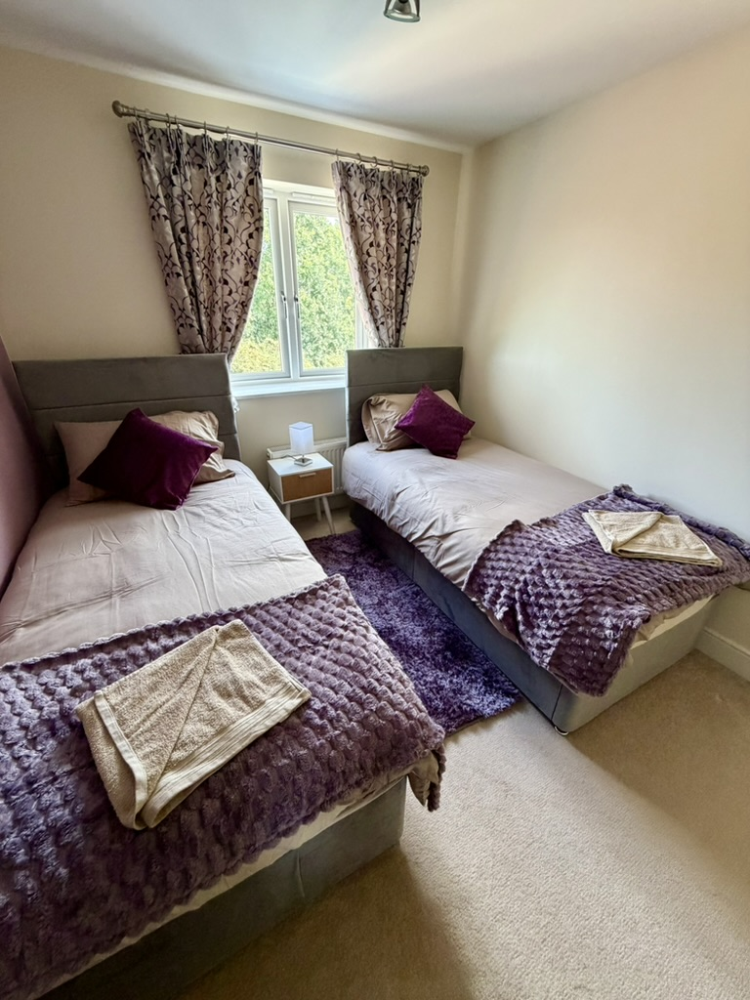
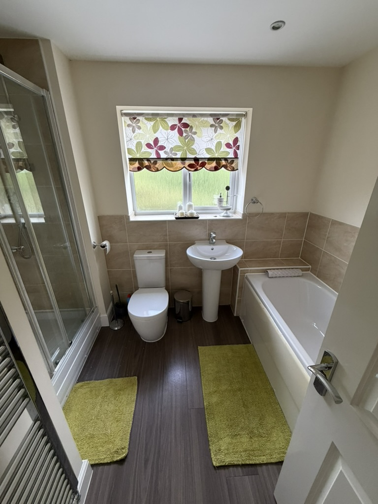
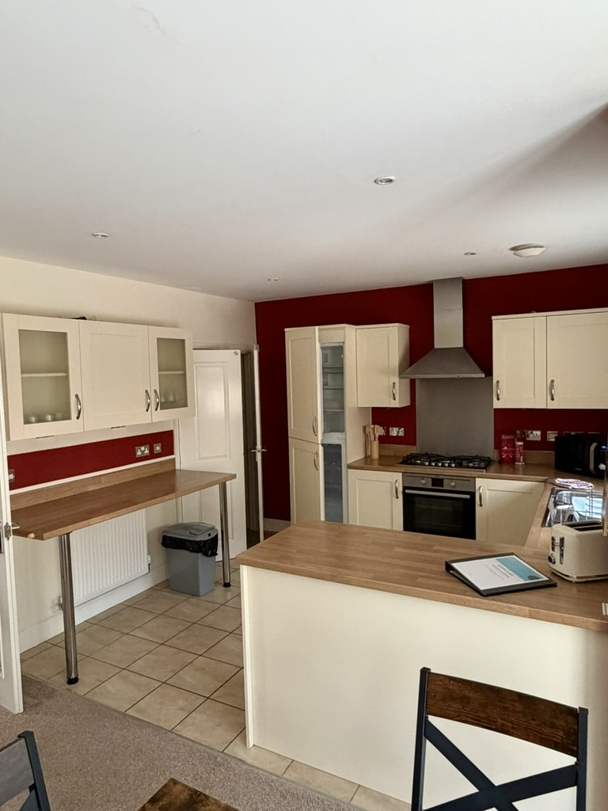
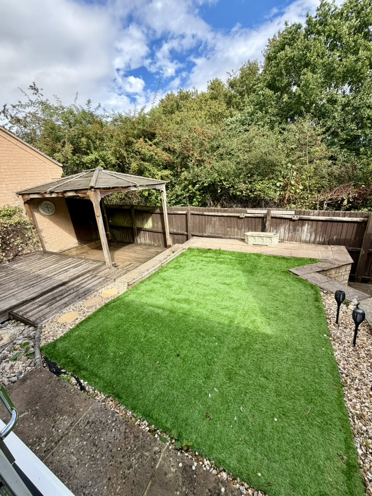

Contractor teams
A four-bedroom contractor accommodation option for teams assigned to Peterborough and the surrounding area.
A whole house in Kings Cliffe with Wi-Fi and bills included, for companies seeking contractor accommodation near Peterborough, corporate accommodation in Kings Cliffe, or a practical base close to Stamford for project work and relocations.
Four bedrooms, shared living and dining space, a fitted kitchen, bathrooms and a private garden give colleagues room to settle in during their stay.








Instead of arranging separate rooms across the area, companies can enquire about booking the whole property for an agreed stay. Availability, occupancy, rates and the precise accommodation setup are confirmed for each enquiry.
A four-bedroom contractor accommodation option for teams assigned to Peterborough and the surrounding area.
A consistent base for colleagues working on temporary or phased projects in the region.
Whole-house accommodation for business travel where privacy and shared living space matter.
A possible short-to-medium-term base while employees or families arrange their next home.
The house is in the Kings Cliffe area, within reach of Stamford, Peterborough and the A1. It offers four bedrooms, Wi-Fi, bills included and private driveway parking. Enquire with your headcount and dates so ASG Property can confirm whether the property and current stay arrangement fit your requirements.
Send the dates, number of guests, company name and reason for the stay.
ASG Property will confirm availability, occupancy, stay setup, rate and what is included.
If the property is suitable, the booking details and terms can be documented clearly.
Include your preferred arrival and departure dates, guest numbers, company name and work location. We will respond with the current availability and relevant details.
Wi-Fi and bills are included. Availability, suitability, occupancy, pricing, furnishing and booking terms are subject to confirmation.